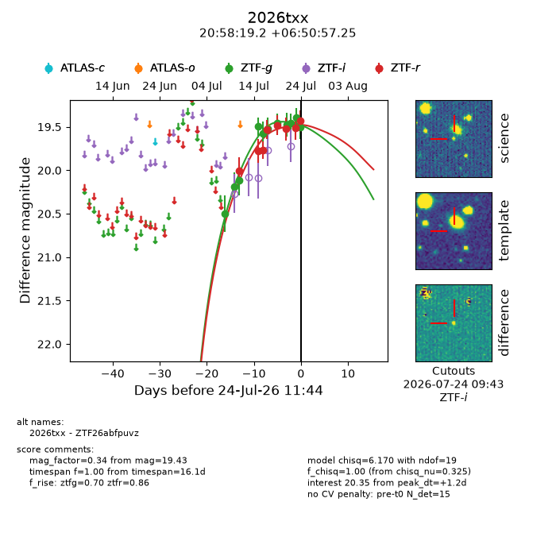
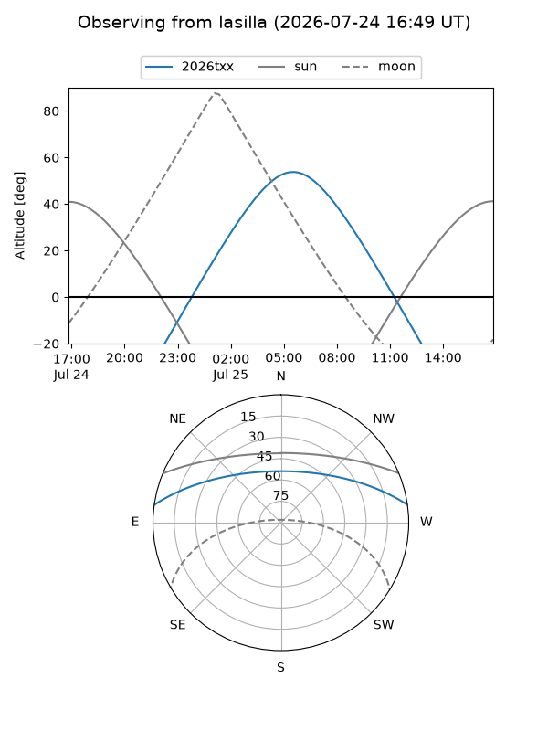
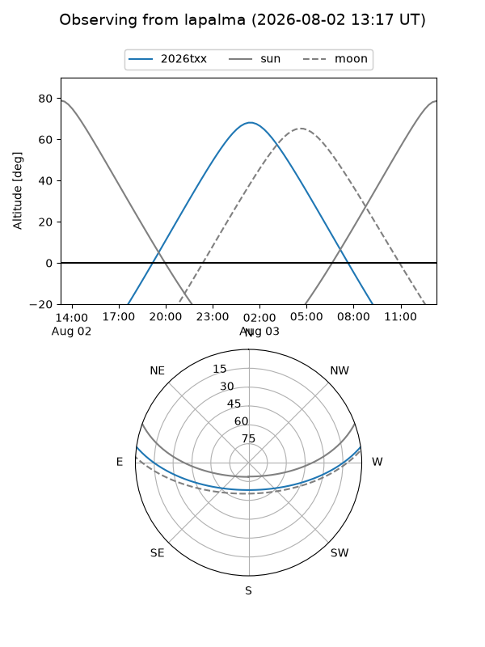
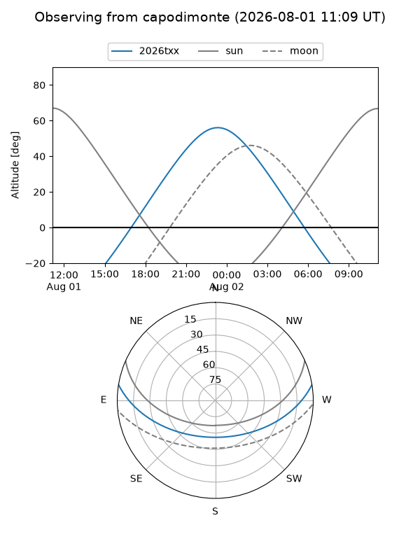
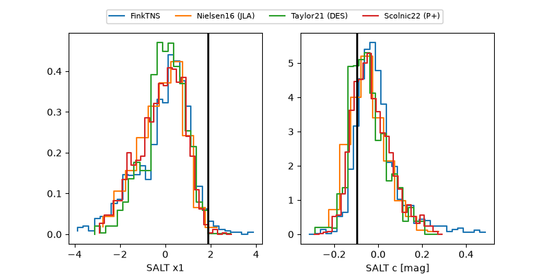

2026txx
Target 2026txx at 2026-07-24 11:46
Aliases and brokers:
FINK-ZTF: ztf.fink-portal.org/ZTF26abfpuvz
Lasair-ZTF: lasair-ztf.lsst.ac.uk/objects/ZTF26abfpuvz
ALeRCE-ZTF: alerce.online/object/ZTF26abfpuvz
YSE-PZ: ziggy.ucolick.org/yse/transient_detail/2026txx
TNS name: wis-tns.org/object/2026txx
Direct TNS query: direct search
alt names
ZTF26abfpuvz (ztf,fink_ztf)
2026txx (tns,yse)
Coordinates:
equatorial (ra, dec) = 314.5800,+6.84924
equatorial (HMS+DMS) = 20:58:19.21,+06:50:57.25
galactic (l, b) = (55.1038,-24.21842)
Flags:
TNS type: nan
peak dt: +1.2
Photometry:
last ztfg=19.51, ztfr=19.43
11 ztfg, 8 ztfr detections
Lightcurve

Visibility



Additional plots
